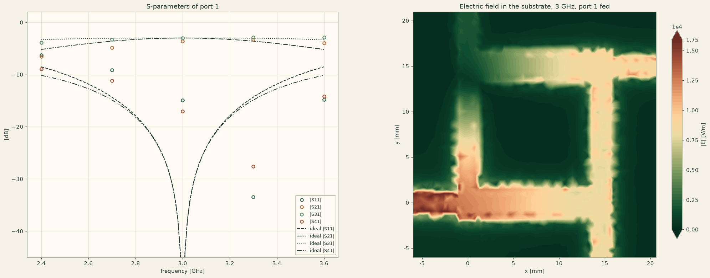
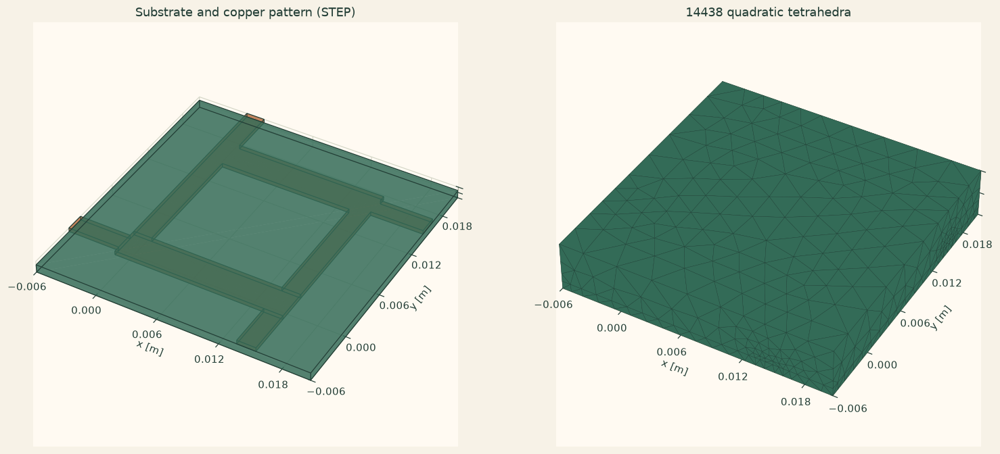

Docs › Examples › Microstrip branch-line coupler
Microwave circuits · 3D
Microstrip branch-line coupler
A 3 dB quadrature hybrid of four quarter-wave microstrip lines on a 0.813 mm substrate splits a 3 GHz signal into two equal halves 90 degrees apart.
Run locally with OneSimulation. The example downloads are free. Running them requires an activated runtime. The current pilot runs on macOS on Apple Silicon with CPython 3.13. Installation and activation · View pilot plans. Scope of the reference checks.

What it computes
OneSimulation solves the full Maxwell equation in substrate and air with second-order Nédélec elements; the copper is a perfect-conductor sheet between two mesh regions, each feed ends in a TEM port that computes its quasi-TEM mode and characteristic impedance from the electrostatic potential of its cross-section, and one factorization per frequency gives the whole 4x4 S-matrix, renormalized to 50 ohm and de-embedded to the corners of the square. The script that builds the STEP files comes with the notebook.
What it checks
At 3 GHz |S21| = -3.60 dB and |S31| = -3.00 dB with 88.2 degrees between them (ideal -3.01 dB, 90 degrees); best isolation -27.6 dB and match -33.5 dB at 3.3 GHz, the corner junctions shifting the band about 10 % up against the ideal transmission-line circuit; the feed lines have 48.5 ohm against 50.0 ohm (Hammerstad-Jensen), the S-matrix is symmetric to 7e-14.
Geometry
The notebook starts at the import of the CAD files microstrip_branch_line_coupler.step, microstrip_branch_line_coupler_strips.step, microstrip_branch_line_coupler_substrate.step: STEP (AP242), readable by any CAD program, with the names of the faces that the boundary conditions use. Put them next to the notebook.

The geometry script
The script microstrip_branch_line_coupler_geometry.py builds the geometry with the CAD objects of OneSimulation and writes the files. Change a dimension there, run it, and run the notebook again.
"""Geometry of the OneSimulation example "Microstrip branch-line coupler".
Builds with the CAD objects of OneSimulation a 3 dB branch-line coupler for 3 GHz on a 0.813 mm
substrate of relative permittivity 3.55, in a box of air 5 mm high. The strip widths and the
quarter-wave lengths follow from the Hammerstad-Jensen formulas: 35.36-ohm series arms (horizontal)
and 50-ohm shunt arms (vertical) between the centre lines of a rectangle, and 50-ohm feed lines that
leave the four corners towards the four sides of the box. Three STEP files:
microstrip_branch_line_coupler.step (the box: faces port_1 ... port_4 on the sides the feeds reach,
ground below, lid above), microstrip_branch_line_coupler_substrate.step (the substrate) and
microstrip_branch_line_coupler_strips.step (a thin layer of air on the substrate in the shape of the
copper: its face on the substrate is the conductor pattern).
"""
import numpy as np
from onesim.cad.d3 import Box
from scipy.optimize import brentq
height, permittivity, frequency, lid, feed, layer = (
0.813e-3,
3.55,
3e9,
5e-3,
6e-3,
0.4e-3,
)
eta0, light = 376.730313668, 299792458.0
def microstrip(width):
u = width / height
a = (
1
+ np.log((u**4 + (u / 52) ** 2) / (u**4 + 0.432)) / 49
+ np.log(1 + (u / 18.1) ** 3) / 18.7
)
b = 0.564 * ((permittivity - 0.9) / (permittivity + 3)) ** 0.053
effective = (permittivity + 1) / 2 + (permittivity - 1) / 2 * (1 + 10 / u) ** (
-a * b
)
f = 6 + (2 * np.pi - 6) * np.exp(-((30.666 / u) ** 0.7528))
return (
eta0 / (2 * np.pi) * np.log(f / u + np.sqrt(1 + 4 / u**2)) / np.sqrt(effective),
effective,
)
width = {
z: brentq(lambda w: microstrip(w)[0] - z, 0.05 * height, 20 * height)
for z in (50.0, 50 / np.sqrt(2))
}
quarter = {
z: light / frequency / np.sqrt(microstrip(w)[1]) / 4 for z, w in width.items()
}
series, shunt = quarter[50 / np.sqrt(2)], quarter[50.0]
ws, wp = width[50 / np.sqrt(2)], width[50.0]
x0, y0 = -feed, -feed
box = Box(
length=series + 2 * feed, width=shunt + 2 * feed, height=lid, origin=(x0, y0, 0.0)
)
substrate = Box(
length=series + 2 * feed,
width=shunt + 2 * feed,
height=height,
origin=(x0, y0, 0.0),
)
strip = lambda x, y, dx, dy: Box(
length=dx, width=dy, height=layer, origin=(x, y, height)
)
pattern = (
strip(-wp / 2, -ws / 2, series + wp, ws)
| strip(-wp / 2, shunt - ws / 2, series + wp, ws)
| strip(-wp / 2, -ws / 2, wp, shunt + ws)
| strip(series - wp / 2, -ws / 2, wp, shunt + ws)
| strip(x0, -wp / 2, feed, wp)
| strip(series - wp / 2, y0, wp, feed)
| strip(series, shunt - wp / 2, feed, wp)
| strip(-wp / 2, shunt, wp, feed)
)
faces = box.boundaries
box.grouped(
port_1=faces.x_min,
port_2=faces.y_min,
port_3=faces.x_max,
port_4=faces.y_max,
ground=faces.z_min,
lid=faces.z_max,
).save("microstrip_branch_line_coupler.step")
substrate.save("microstrip_branch_line_coupler_substrate.step")
pattern.save("microstrip_branch_line_coupler_strips.step")
print(
f"widths: 50 ohm {wp * 1e3:.3f} mm, 35.36 ohm {ws * 1e3:.3f} mm; quarter waves {series * 1e3:.3f} mm (series), "
f"{shunt * 1e3:.3f} mm (shunt)"
)The notebook
The complete notebook, cell by cell. Run it to produce the figures and the comparison printout.
A branch-line (quadrature) hybrid divides the power entering port 1 equally between ports 2 and 3, with a phase difference of 90°, and leaves port 4 isolated. It is a square of four lines, each a quarter wavelength long at the centre frequency: two series arms of \(Z_0/\sqrt2=35.36\) Ω and two shunt arms of \(Z_0=50\) Ω. Here it is etched for 3 GHz on a 0.813 mm substrate of relative permittivity 3.55; 50 Ω feed lines run from the corners to the four sides of a box of air.
OneSimulation solves the time-harmonic Maxwell equation
in the substrate and the air with second-order Nédélec elements. The copper is a sheet without thickness: the faces between the substrate and a thin layer of air shaped like the conductors (region_interface) are perfect electric conductors. Each side of the box is a TEMPort: it solves the electrostatic potential of its cross-section, \(\nabla\cdot(\varepsilon\nabla V)=0\) with the strip at 1 V, for the quasi-TEM mode, its effective permittivity and its characteristic impedance. scattering_matrix feeds the four ports in turn from one factorization, renormalizes the waves to 50 Ω and moves the reference planes from the sides of the box to the corners of the square.
| faces | condition | |---|---| | port_1 ... port_4 | TEM port, signal conductor: the copper | | ground, copper | perfect electric conductor | | lid | impedance boundary \(Y_0=\sqrt{\varepsilon_0/\mu_0}\) (open top) |
Reference (D. M. Pozar, Microwave Engineering, 4th ed., Wiley 2012, §7.5; E. Hammerstad and Ø. Jensen, Accurate models for microstrip computer-aided design, IEEE MTT-S Digest 1980, 407-409). At the centre frequency the ideal coupler has
i.e. \(|S_{21}|=|S_{31}|=-3.01\) dB, \(S_{11}=S_{41}=0\) and \(\arg S_{31}-\arg S_{21}=\mp90°\) (the sign depends on the phasor convention). Away from it the ideal circuit of four lines of electrical length \(\theta=\frac\pi2 f/f_0\) is solved by its nodal admittance matrix \(Y=\sum Y_c\,(\mathrm i\cot\theta\,(\mathbf e_i\mathbf e_i^T+\mathbf e_j\mathbf e_j^T)-\mathrm i\csc\theta\,(\mathbf e_i\mathbf e_j^T+\mathbf e_j\mathbf e_i^T))\) (\(e^{-\mathrm i\omega t}\)), \(S=(I-Z_0Y)(I+Z_0Y)^{-1}\). The strip widths (1.819 mm and 3.049 mm) and lengths come from the Hammerstad-Jensen formulas, 50 Ω with \(\varepsilon_{\rm eff}=2.766\).
import numpy as np
from onesim.cad.d2 import Plane
from onesim.cad.exchange import load
from onesim.materials import VACUUM_PERMEABILITY, VACUUM_PERMITTIVITY
from onesim.materials.electromagnetic import (
IsotropicElectromagneticMaterial,
RegionwiseElectromagneticMaterial,
)
from onesim.meshing import LocalRefinement, TetrahedralMesher, region_interface
from onesim.numerics import Numerics
from onesim.numerics.fem import FiniteElement, Nedelec
from onesim.numerics.linear import ComplexSparseDirect
from onesim.physics.electromagnetics import (
FrequencyDomainMaxwell,
ImpedanceBoundary,
PerfectElectricConductor,
TEMPort,
port_modes,
port_values,
scattering_matrix,
)
from onesim.simulation import Problem, Simulation
from onesim.visualization import plots, theme
theme.set()
light, eta0 = 1 / np.sqrt(VACUUM_PERMEABILITY * VACUUM_PERMITTIVITY), np.sqrt(
VACUUM_PERMEABILITY / VACUUM_PERMITTIVITY
)
f0, feed, height = 3e9, 6e-3, 0.813e-3Geometry and mesh
load reads the box of air with its named faces, the substrate and the thin layer shaped like the copper; both become regions of one mesh. Second-order tetrahedra of 1 mm follow the copper, 1.6 mm the substrate and 5 mm the air.
box = load("microstrip_branch_line_coupler.step")
substrate = load("microstrip_branch_line_coupler_substrate.step").named("substrate")
strips = load("microstrip_branch_line_coupler_strips.step").named("strips")
faces = box.boundaries
mesh = TetrahedralMesher(
target_size=5e-3,
embedded_regions=(substrate, strips),
refinements=(
LocalRefinement(region=strips, target_size=1e-3),
LocalRefinement(region=substrate, target_size=1.6e-3),
),
).generate(box)
copper = region_interface(mesh, strips, substrate)
view = plots.Camera(elevation=40, azimuth=-60)
fig = plots.figure(1, 2, size=(14, 6))
plots.geometry(
[substrate, strips],
labels=False,
camera=view,
title="Substrate and copper pattern (STEP)",
ax=fig[0],
)
plots.mesh(
mesh,
groups=("all",),
legend=False,
camera=view,
title=f"{mesh.cell_count} quadratic tetrahedra",
ax=fig[1],
)
plots.show()Model
simulation builds the model at one frequency: the substrate takes \(\varepsilon_r=3.55\), every side of the box is a TEM port of the copper. The sweep runs from 2.4 to 3.6 GHz.
material = RegionwiseElectromagneticMaterial(
{"substrate": IsotropicElectromagneticMaterial(relative_permittivity=3.55)},
default=IsotropicElectromagneticMaterial(),
)
simulation = lambda f, fed=None: (
Simulation(
problem=Problem(
name="Branch-line coupler",
geometry=box,
physics=(
m := FrequencyDomainMaxwell(
domain=box.volume,
frequency=f,
material=material,
phasor_convention="exp(-i*omega*t)",
amplitude_convention="peak",
),
),
boundary_conditions=tuple(
TEMPort(
physics=m,
boundary=getattr(faces, f"port_{k}"),
signal=copper,
incident_power=float(k == fed),
)
for k in (1, 2, 3, 4)
)
+ (
PerfectElectricConductor(physics=m, boundary=faces.ground | copper),
ImpedanceBoundary(physics=m, boundary=faces.lid, admittance=1 / eta0),
),
),
mesh=mesh,
numerics=Numerics(
spatial=FiniteElement(element=Nedelec(order=2)),
linear_solver=ComplexSparseDirect(),
),
),
m,
)
frequencies = np.round(np.linspace(2.4e9, 3.6e9, 5), -6)
sweep = {
f: scattering_matrix(
*simulation(f), reference_impedance=50.0, reference_planes=(feed,) * 4
)
for f in frequencies
}
def ideal(
f, admittances=np.array([np.sqrt(2), 1.0, np.sqrt(2), 1.0]) / 50, lengths=np.ones(4)
):
theta, e = np.pi / 2 * f / f0 * lengths, np.eye(4)
pairs = [(0, 1), (1, 2), (2, 3), (3, 0)]
y = sum(
c
* (
1j / np.tan(t) * (np.outer(e[i], e[i]) + np.outer(e[j], e[j]))
- 1j / np.sin(t) * (np.outer(e[i], e[j]) + np.outer(e[j], e[i]))
)
for c, t, (i, j) in zip(admittances, theta, pairs)
)
return (np.eye(4) - 50 * y) @ np.linalg.inv(np.eye(4) + 50 * y)Results
The TEM ports report the characteristic impedance and effective permittivity of the feed lines. Then the S-parameters (50 Ω, reference planes at the corners of the square) at the centre frequency against the ideal coupler, and over the band against the ideal circuit; reciprocity and the power that leaves the box through the open top.
centre = sweep[f0]
result, m = (lambda run: (run[0].solve_stationary(), run[1]))(simulation(f0, fed=1))
dB = lambda x: 20 * np.log10(max(abs(x), 1e-3))
print(
"feed lines (TEM ports): Z0 = "
+ ", ".join(
f"{v['characteristic_impedance'].real:.2f}" for v in port_values(result, m)
)
+ " ohm (Hammerstad-Jensen 50.00 ohm), effective permittivity "
+ f"{port_modes(result, m)[0]['effective_index'][0].real ** 2:.3f} (2.766)"
)
print(f"at {f0 / 1e9:.1f} GHz: computed ideal")
for i in range(4):
print(
f" S{i + 1}1 {abs(centre[i, 0]):.4f} ({dB(centre[i, 0]):6.2f} dB) {abs(ideal(f0)[i, 0]):.4f}"
)
print(
f" arg S31 - arg S21 = {np.degrees(np.angle(centre[2, 0] / centre[1, 0])):.1f} deg (ideal {np.degrees(np.angle(ideal(f0)[2, 0] / ideal(f0)[1, 0])):.1f} deg); "
f"|S21|^2 - |S31|^2 = {abs(centre[1, 0]) ** 2 - abs(centre[2, 0]) ** 2:+.3f}"
)
print(
f"reciprocity max |S - S^T| over the band: {max(np.abs(S.matrix - S.matrix.T).max() for S in sweep.values()):.1e}; "
f"power not returned at the ports (open top), port 1 fed: {1 - np.sum(np.abs(centre.matrix[:, 0]) ** 2):.3f}"
)
print(
"f [GHz] |S11| dB |S21| dB |S31| dB |S41| dB ideal circuit: |S11| dB |S21| dB |S31| dB |S41| dB"
)
for f, S in sweep.items():
print(
f"{f / 1e9:6.2f} "
+ "".join(f"{dB(S[i, 0]):9.2f} " for i in range(4))
+ " "
+ "".join(f"{dB(ideal(f)[i, 0]):9.2f} " for i in range(4))
)
best = min(sweep, key=lambda f: abs(sweep[f][3, 0]))
print(
f"best isolation of the sweep at {best / 1e9:.2f} GHz: |S41| {dB(sweep[best][3, 0]):.1f} dB, |S11| {dB(sweep[best][0, 0]):.1f} dB, "
f"|S21| {dB(sweep[best][1, 0]):.2f} dB, |S31| {dB(sweep[best][2, 0]):.2f} dB (design frequency {f0 / 1e9:.1f} GHz)"
)The split, the quadrature and the reciprocity are those of the ideal coupler; the band of best match and isolation lies about 10 % above the design frequency. The arms are a quarter wavelength long between the centres of the corner junctions, and the junctions, squares of 1.8 mm by 3 mm, shorten them electrically; in practice the arms are lengthened to compensate.
Figure
Left: the four S-parameters of port 1 over the band against the ideal circuit. Right: the electric field just below the copper at 3 GHz with port 1 fed: the wave splits at the first corner and cancels at port 4.
fig = plots.figure(1, 2, size=(18, 7))
plots.line(
points={
f"|S{i + 1}1|": (frequencies / 1e9, [dB(S[i, 0]) for S in sweep.values()])
for i in range(4)
},
reference={
f"ideal |S{i + 1}1|": (
np.linspace(2.4, 3.6, 121),
[dB(ideal(f * 1e9)[i, 0]) for f in np.linspace(2.4, 3.6, 121)],
)
for i in range(4)
},
xlabel="frequency [GHz]",
ylabel="[dB]",
ylimits=(-45, 2),
title="S-parameters of port 1",
legend="lower right",
ax=fig[0],
)
plots.section(
result.field(m.electric_field),
plane=Plane(origin=(0.0, 0.0, 0.6 * height), normal=(0.0, 0.0, 1.0)),
component=lambda E, p: np.linalg.norm(np.abs(E), axis=1),
limits="robust",
subdivisions=1,
length_unit="mm",
label="|E| [V/m]",
title="Electric field in the substrate, 3 GHz, port 1 fed",
ax=fig[1],
)
plots.show()Going further
Change the design frequency or the substrate in microstrip_branch_line_coupler_geometry.py; cascading two branch-line sections widens the band of good isolation. Replace the impedance boundary on the lid by a metal cover to see the box resonances of a shielded circuit.